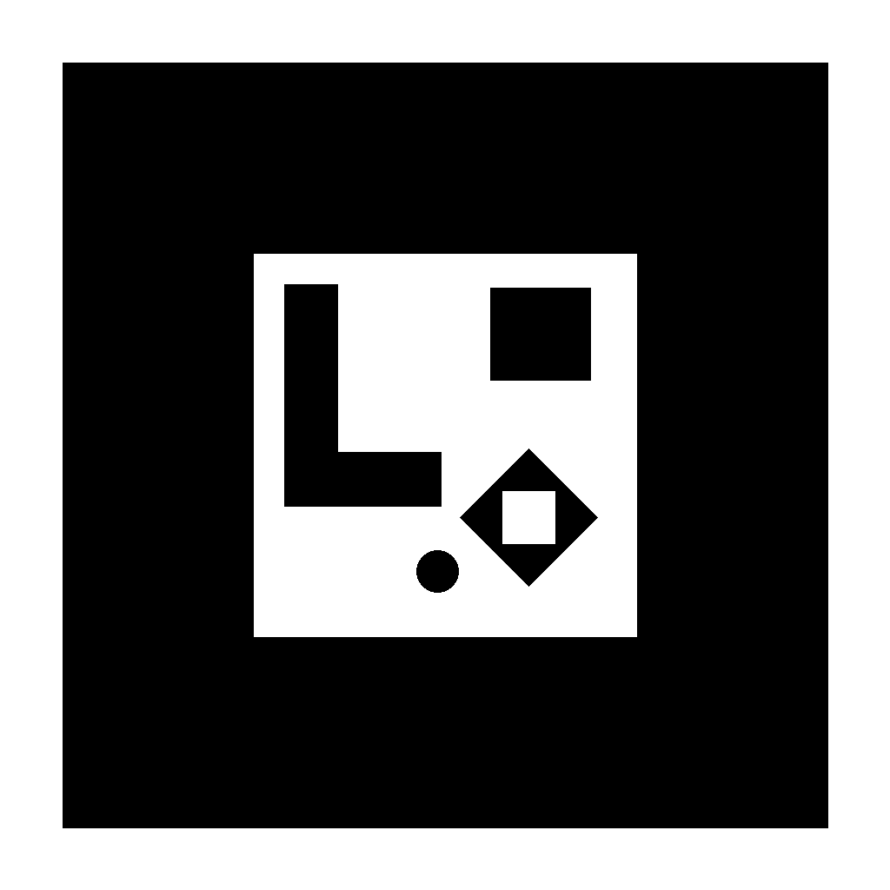

Marker AR Tata Surya
Tampilkan pada layar kedua atau cetak di kertas putih.

Cetak Marker
Buka AR
Menu
Pastikan seluruh bingkai hitam terlihat di kamera. Hindari pantulan cahaya dan jangan melipat marker.